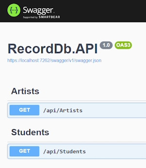
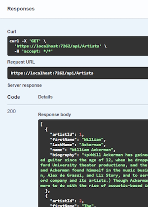
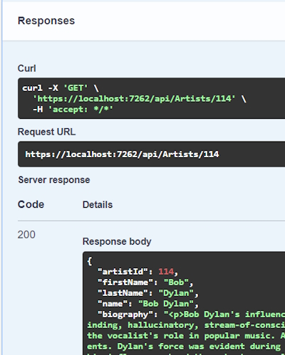

Create New Artist Controller, CRUD Operations & Action Methods
Note: My RecordDb database is an existing database and was made with singular table names. For this reason my DbSet names are singular as well. In ASP.Net Core and EntityFramework the Domains are usually plural.
Create the Artists Controller
Remember to use the Empty API Controller template.
namespace RecordDb.API.Controllers
{
[Route("api/[controller]")]
[ApiController]
public class ArtistsController : ControllerBase
{
}
}
The annotations are important (using an API Controller template creates these).
[Route("api/[controller]")]
This annotation denotes the route for the controller. In our case this will be.
This Url is going to the artists controller.
artists is from the prefix of the controller name (ArtistsController.cs).
We could also change this annotation to.
[Route("api/artists")]
And it would work just the same.
The following annotation denotes that the controller is an API controller (not an MVC controller).
[ApiController]
Note: if this annotation is missing you won't see any endpoints in Swagger.
Creating a DbContext
We will create a DbContext to retrieve our Artist data using constructor injection.
private readonly RecordDbContext dbContext;
public ArtistsController(RecordDbContext dbContext)
{
this.dbContext = dbContext;
}
Now we can use the dbContext in our Action methods.
Creating an Action Method
This is the route to get all Artists.
// GET: https://localhost:1234/api/artists
[HttpGet]
public async Task<IActionResult> GetAll()
{
var artists = await dbContext.Artist.ToListAsync();
return Ok(artists);
}
We use a [HttpGet] verb as our attribute.
We have access to our two domains through our dbContext so we can bring back the Artist data using the ToListAsync() method.
Run the code and a Swagger page will appear in your browser.

When you execute this endpoint it will return.

The data is returned as JSON.
{
"artistId": 1,
"firstName": "William",
"lastName": "Ackerman",
"name": "William Ackerman",
"biography": "<p>Will Ackerman has gained..."
},
Also note that the Swagger returns a Url and a curl instruction and you can use either of these to return data.
And.
curl -X 'GET' 'https://localhost:7262/api/Artists' -H 'accept: /'
Getting an Artist by Id
For this Action method we will have to supply an Id to return a single Artist.
// GET: https://localhost:1234/api/artists/114
[HttpGet]
[Route("{id:int}")]
public async Task<IActionResult> GetById([FromRoute] int id)
{
var artist = await dbContext.Artist.FindAsync(id);
if (artist == null)
{
return NotFound($"An Artist with Id: {id} wasn't found!");
return Ok(artist);
}
Code breakdown
Once again we are using a [HttpGet] verb.
This time we need to receive a parameter of Id to find a particular Artist. We do this by adding a Route attribute in this format.
[Route("{id:int}")]
Note: the parameter name (id) in the Route must match the method's input parameter (see below).
[Route("{id:int}")]
public async Task<IActionResult> GetById([FromRoute] int id)
{
...
}
Also note that in the Route attribute we can make the parameter type safe by adding the int type.
In the method signature we know that the parameter is coming in from the Route so we can use the property [FromRoute] in front of the input parameter.
The next line allows us to find and return the Artist record if it is found.
var artist = await dbContext.Artist.FindAsync(id);
The FindAsync() method requires an input parameter that has to be the Primary Key for the Entity.
We can also use the following method to return the Artist record.
var artist = await dbContext.Artist.FirstOrDefaultAsync(a => a.ArtistId == id);
In this statement we use a LINQ query method, .FirstOrDefault() where we query the input parameter against the parameter in the database.
The benefit of using this method is that we are not tied to using just the id as a parameter. We could also use other parameters for the search such as the Name parameter, for example.
// GET: https://localhost:1234/api/artists/Yes
[HttpGet]
[Route("{name:alpha}")]
public async Task<IActionResult> GetById([FromRoute] string name)
{
var artist = await dbContext.Artist.FirstOrDefaultAsync(a => a.Name == name);
if (artist == null)
{
return NotFound($"An Artist with Name: {name} wasn't found!");
}
return Ok(artist);
}
Once we have returned the result we need to test that a valid Artist has been returned.
In the following code we have returned a response of 200 which means success. We code this with.
return Ok(artist);
This returns.

If nothing has been returned we can report the error with a response of 404, Not Found with this code.
return NotFound($"An Artist with Name: {name} wasn't found!");